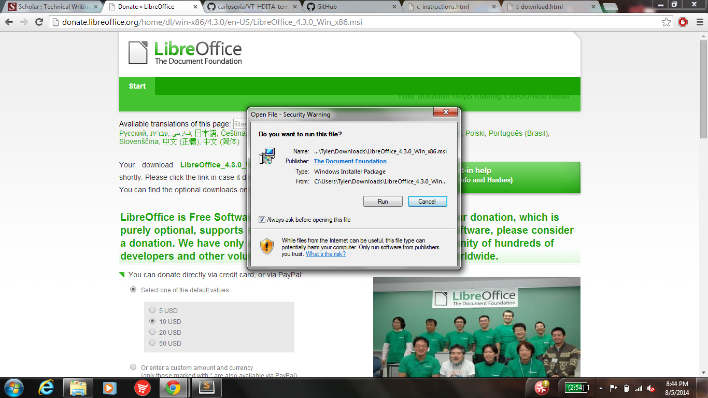

 ---
layout: base
title: "How to download LibreOffice"
---
<article data-hd-class="task"> 
<h1>How to Download LibreOffice!</h1> 
<p>If you need to use LibreOffice for a class, downloading it is your first step to success!</p> 
<section data-hd-class="task/context"> 
	<h2>Context</h2>
<p>This will allow you to use LibreOffice for productive tasks! </p>
</section> 
<section data-hd-class="task/prereq"> 
<h2>Pre-requisites</h2>  
<ul> 
<li>Have access to internet</li>
</ul> 
</section> 
<section data-hd-class="task/steps-informal"> 
<h2>Steps</h2>
<ol> 
<li>Go to ww.LibreOffice.org</li> 
<li>Click the "Download Now" button</li>
<li>Click "Download Version ___" with the blank being the most recent version
<li>Open the file once the download is complete</li>
<li>Run the File!</li>
<li>Click the Next Button</li>
<li>Click the Next Button</li>
<li>Click the Install Button</li>
<li>Click Yes</li>
<li>Click Finish</li>
</ol> 
</section>
<section data-hd-class="task/example">
<h2>Example</h2>
<p>Your screen should look like this at the start of the download <em>(Figure 1)</em></p>
<figure>
  
  <figcaption>Figure 1: Download Screen</figcaption>
</figure>
	<a href="c-instructions.html">Home Page</a>
</section>
</article>
